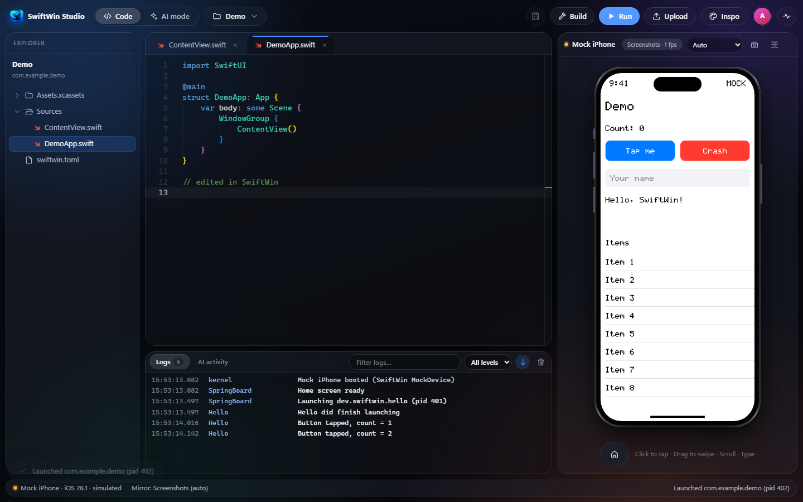

SwiftWin Studio
iPhone apps. Built on Windows.
Write SwiftUI, press Run, and it's on your real iPhone. No Mac, ever.
Free and open source · Windows 10 and 11

Everything in one window.
Your code, your app's logs, and your iPhone, side by side.
▶
Your real iPhone
Build, sign with your Apple ID, install and launch over USB in one click.
◎
A live mirror
See the phone on your screen. Click to tap, drag to swipe, type to type.
✦
Set up for you
One button installs Swift, Apple's USB service and the iOS SDK.
Fast enough to forget about.
Measured on a recent iPhone with iOS 27 and Windows 11.
0Macs needed
4 sto compile an edit
27 sedit to running on iPhone
23 fpslive mirror
The first build compiles Apple's frameworks once and takes about 5 minutes.
Let your AI drive.
Connect Claude Code or Codex once. It builds your app, runs it on the phone, looks at the screen and taps through it while you watch.
Claude Code
claude mcp add swiftwin -- swiftwin mcpOpenAI Codex
codex mcp add swiftwin -- swiftwin mcpGet SwiftWin.
- Windows 10 or 11 · an iPhone with iOS 17 or newer · a free Apple ID
- iPhone apps only for now. iPad and Mac apps aren't supported yet.